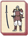

Requires
- Buildings:

- Arts: 
Enables
Basic Building Statistics (can be modified by difficulty level, arts, skills, traits and retainers)
- Cost: 1600
Description
Bow and sword demand discipline from warriors.
This school allows the training of samurai infantry, and improves the expertise of other bushi (warriors). Long years of training are required to understand the way of the warrior, and to train mind and muscles to the point where a stroke or shot can be made without conscious thought. A warrior needs to empty his mind of everything – even, or perhaps especially, fear, hope and anger – if he is to fight to his full potential. The thousands of hours spent with sword and bow empty the man of everything except the need to perform the perfect act. In that moment of still perfection, he can defeat any opponent without considering anything other than victory. Such training is necessary, but expensive for the warlord who wants his men to be the best.